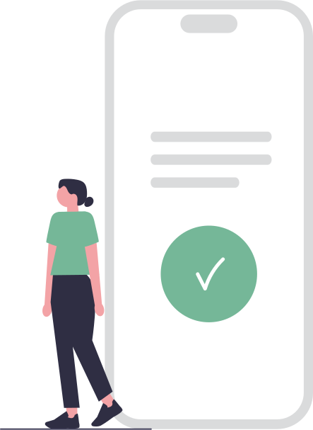

<c-modal id="liveDemoModal" [visible]="sharedService.visible" (visibleChange)="handleLiveDemoChange($event)">
    <c-modal-header>
        <h5 cModalTitle>Integre seu whatsapp</h5>
        <button (click)="closeModal()" cButtonClose></button>
    </c-modal-header>
    <c-modal-body>
        <div class="container_integration" *ngIf="!isConnected else conected">
            <div class="not_conected">
                <p [innerHtml]="sharedService.text"></p>
                <div *ngIf="loadingQr" class="spinner">
                    <c-spinner color="primary"></c-spinner>
                </div>
                <div *ngIf="qrcodeWpp.length > 0">
                    
                </div>
            </div>
           
        </div>
        <ng-template #conected>
            <div class="conected">
                <h5 *ngIf="!loadingLogout" class="text-success">Conectado</h5>
                <h5 *ngIf="loadingLogout" class="text-success">Desconectando ...</h5>
                
                <div *ngIf="loadingLogout" class="spinner">
                    <c-spinner color="primary"></c-spinner>
                </div>
            </div>
        </ng-template>
    </c-modal-body>
    <c-modal-footer>
        <button *ngIf="isConnected" cButton color="primary" variant='outline' (click)="disconnectWpp()">
            Desconectar 
        </button>
        <button *ngIf="!isConnected" cButton color="primary" (click)="getQrcode()">
            Gerar QR Code
        </button>
    </c-modal-footer>
</c-modal>